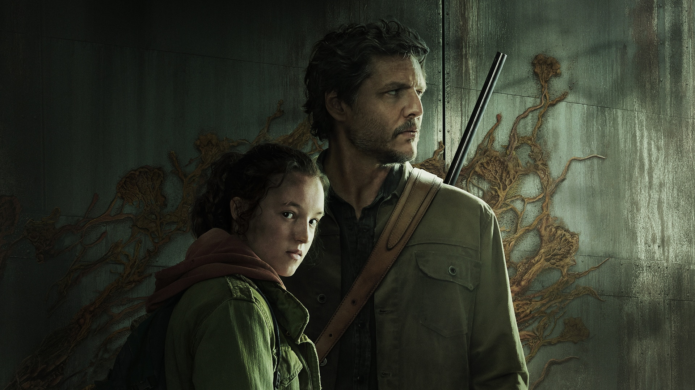
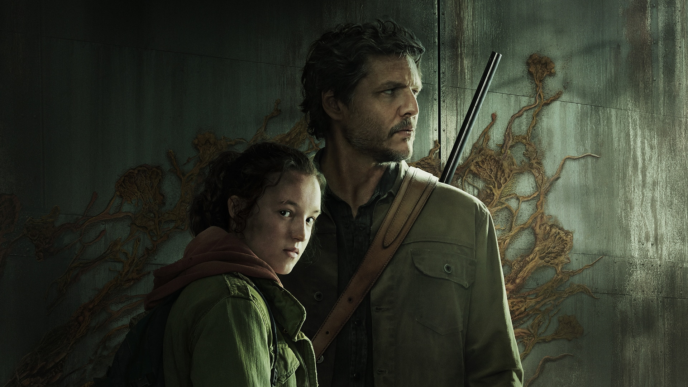

The Last of Us é uma franquia de jogos eletrônicos de ação-aventura e survival horror exclusiva da PlayStation, criada por Neil Druckmann. A franquia é situada em um mundo pós-apocalíptico, com seres humanos hostis e criaturas canibais infectadas por uma mutação do fungo cordyceps. Em uma civilização devastada, em que infectados e sobreviventes veteranos estão à solta, Joel, um protagonista abatido, é contratado para tirar uma garota de 14 anos, Ellie, de uma zona de quarentena militar. No entanto, o que começa como um pequeno serviço se transforma em uma jornada brutal através do país.
Ambientado cinco anos após os eventos de The Last of Us, o jogador assume o papel de duas protagonistas em um Estados Unidos pós-apocalíptico: Ellie, que busca por vingança após um evento traumático, e Abby, uma soldada que se envolve em um conflito entre uma milícia e um culto.
The Last of Us é uma série distópica da HBO baseada na franquia de jogos de videogame de mesmo nome criada por Neil Druckmann. O drama narra um futuro pandêmico que foi devastador para humanidade, deixando os seres humanos à beira da extinção.